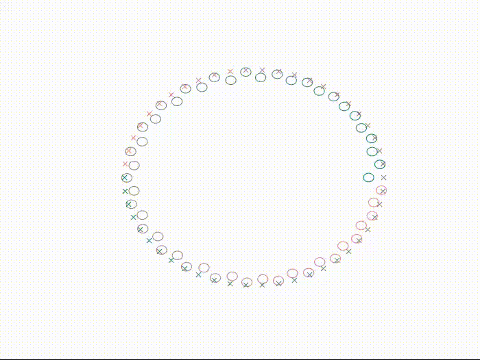
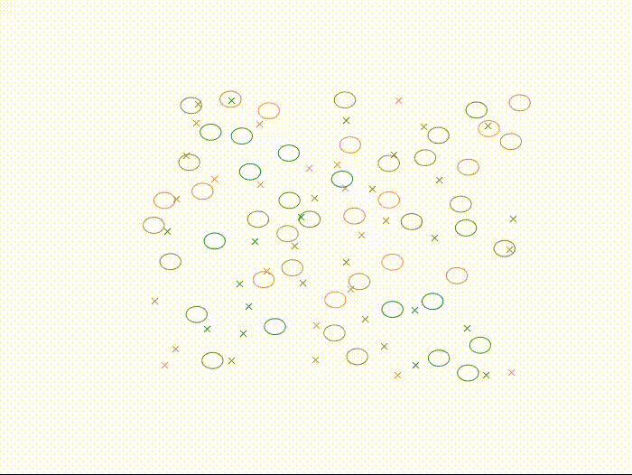
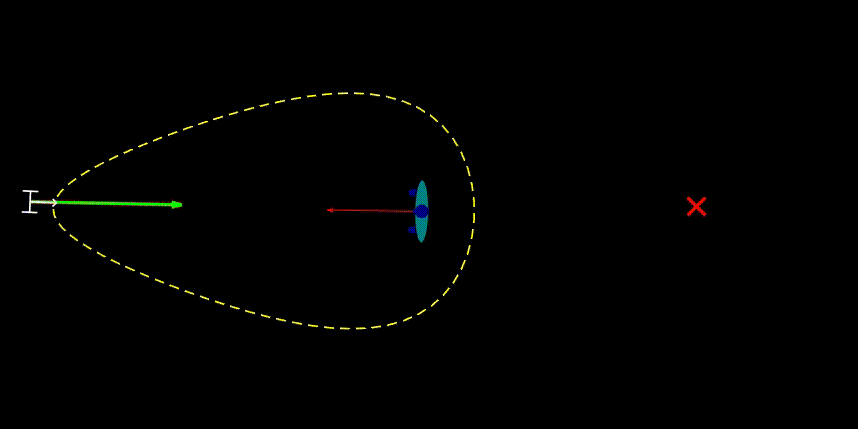
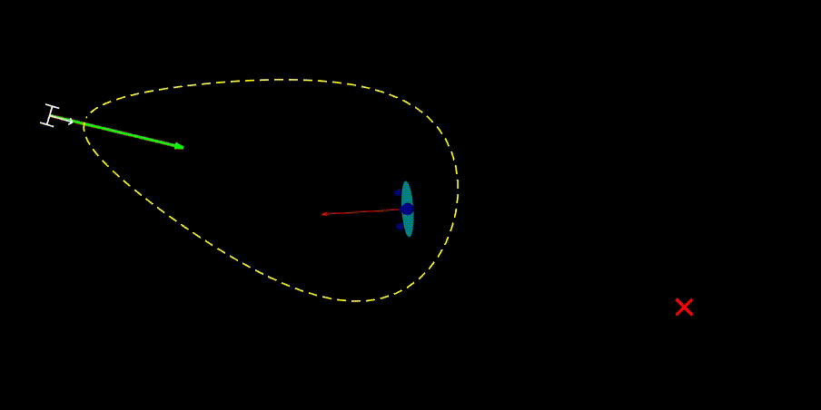

Code
Please refer to my Github page
Rule-Based Lloyd Algorithm for Multi-Robot Motion Planning and Control with Safety and Convergence Guarantees ([J7])
click here , 
Lloyd-based Framework for Multi-Agent Collective Behaviors ([J5],[J2],[C1],[C3])
click here , for the only navigation version click here 
Time-Inverted Kuramoto Model ([J4],[J6],[C6])
click here 

Socially-aware Navigation based on limit-cycles ([J1])
click here 